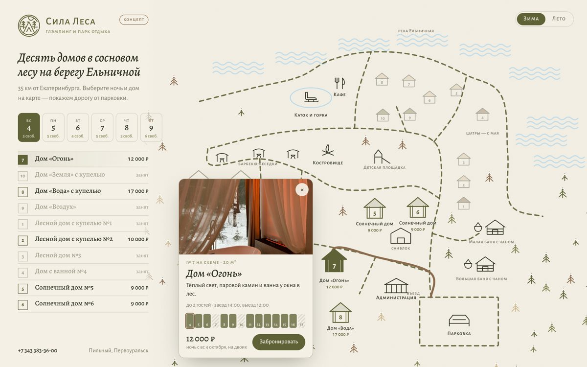
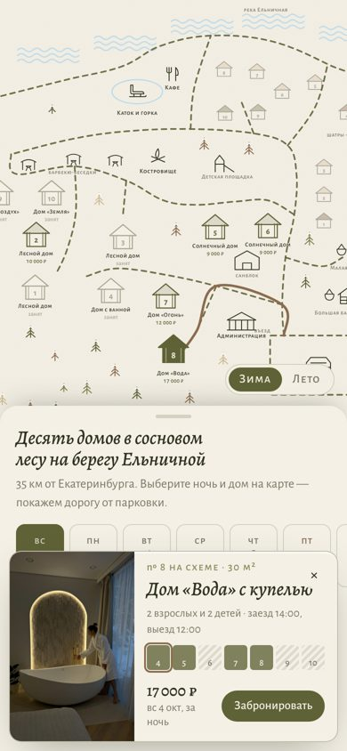
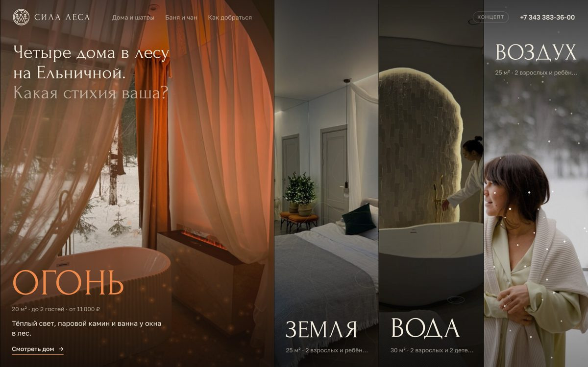
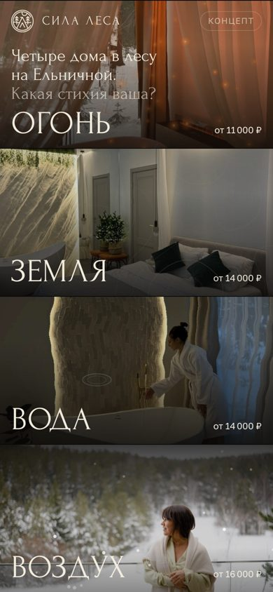
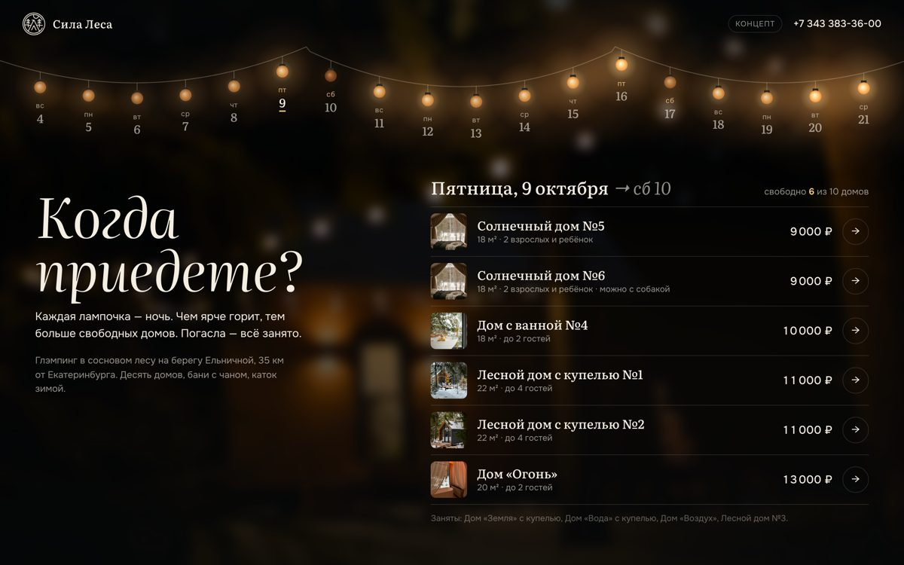
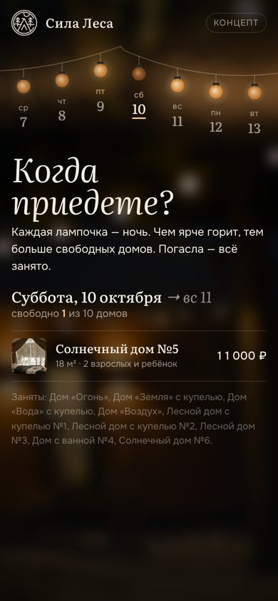

Три варианта нового сайта
Первый экран и главный блок — на ваших фотографиях, с реальными ценами и свободными датами из вашего календаря. Всё живое: можно нажимать, на телефоне тоже.
Бронирование остаётся в Lite PMS — кнопки ведут в ваш календарь, ничего переносить не нужно. Цены и занятость сняты 4 октября.


Карта парка
Ваша схема парка становится главным экраном. Гость выбирает ночь и дом — от парковки прорисовывается дорожка, рядом карточка с ценой и свободными ночами на две недели. Переключатель «зима / лето»: зимой на месте пляжа каток.
Открыть карту →

Четыре стихии
Дома Огонь, Земля, Вода и Воздух — четыре живые панели. Огонь мерцает и роняет искры, вода расходится кругами от курсора, над «Воздухом» идёт снег. Нажатие открывает дом: площадь, гости, удобства и цены на неделю.
Открыть стихии →

Гирлянда-календарь
Гирлянда над костровищем — это календарь. Каждая лампочка — ночь: чем ярче горит, тем больше свободных домов, погасла — всё занято. Ниже — свободные дома на выбранную ночь с ценами.
Открыть гирлянду →Это концепт, сделан по собственной инициативе — чтобы показать идею. Остальные разделы (бани, шатры, мероприятия, вопросы, контакты) соберу в стиле того варианта, который понравится.